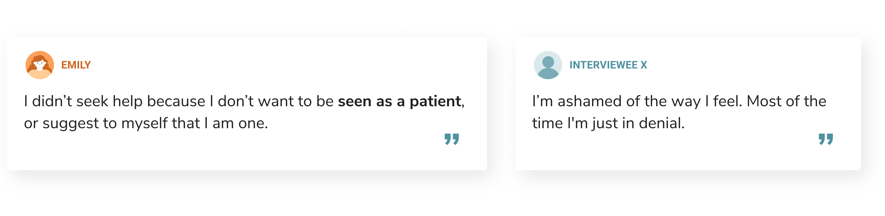

Role
Research,
Product Design
Team
Individual Project
Duration
1 week
Project Brief
This was a prompt from a hackathon project. My team made a pill reminder app. Since there was not enough time to do in-depth research during the hackathon, I decided to conduct a few user interviews after the event to validate some of the assumptions we made.
And that's when I realized my team had a lot of misperceptions about mental illness and people who suffer from it. Base on my research findings, I came up with a new solution...
Problem
How can we encourage people who struggle with mental health to reach out to mental health systems to get the help they need?
Solution
A platform attracts users with interesting psychology articles while having therapy services and additional mental health resources integrated into the app.
Decision 1
A platform NOT made to target people who struggle with mental health
After conducting user interviews and looking at existing solutions, I realized apps in the mental health categories are generally targeting a market that rejects them.
#1 Browsing
- A platform for users to proactively learn more about themselves and gain knowledge about psychology, instead of a reactive solution for "sick people".
- Provide quality articles written by verified psychologists that directly link to the author's profile.


Research
3 / 6
of the interviewees have never reached out for professional help
2 / 3
who have reached out mentioned reading articles of related issues helped

Key Findings
- People don't like the association with mental health illness
- People who struggle tend to avoid cues that lead them to think they are depressed
Interations

Decision 2
Display therapy resources on the author's profile, prioritizing appointment booking
The goal is to make users aware of the resources and be familiar with the mental health system through everyday use of the app, without making it seem exclusive for people who struggle. But when they are going through tough times, they will know exactly where to find help.


#2 "Shop" for therapists
- Normalize the concept of talking to therapists by making the services more accessible, affordable, and transparent.
- Provide a more flexible and private option through virtual consultations.
Research
Key Findings
- A lot of the free resources only care about life-threatening situations
- Cost, uncertainty, and Lack of knowledge are all barriers that stop people from seeking help
Interations
Decision 3
Building community through group activities that promote general wellbeing
All my interviewees mentioned the importance of companionship, but my research had also indicated depression is contagious. Intending to build a communication-based community could backfire.
#3 Building Community
- Provide companionship through positive activities such as group meditation and live yoga.
- Provide additional resources that focus on wellness.
Research
A couple of my interviewees mentioned their therapists suggest them to do meditation and be more active. Meditation had also proven to have many health benefits includes reducing stress, release anxiety, etc.
Iterations

Decision 4
Use categories / tags to show content relevant to demographic and stage of life
When I asked the interviewees about the causes, I heard very different responses includes school, family, career, relationship, etc. Having different categories allows users to receive feeds most relevant to their situation.

# Onboarding
- Choose age, gender, and interests. Use a data-driven algorithm to show content and common questions based on demographics and stage of life.
Research

Additionally, this decision is also an attempt to address some of the fundamental causes of mental health issues, such as bad parenting. Articles under the parenting tags are aiming to teach users parenting psychology so that their kids can grow up in a healthy environment.
Design Process
Primary Research
I conducted user interviews with 6 people who have suffered from or are currently going through mental health issues.
Research Goals
- In what situations our interviewees decide to seek help
- Factors that stop them from seeking help
- Factors/methods that help them with recovery
- Misperception about people who suffered from mental health issues
Understanding the Users
Key Pain Points
Define the Problem
Target Users
Project Goals
- Improve the transparency and accessibility of mental health systems.
- Boost emotional wellbeing and mental health of the general public.
- Normalize the concept of talking to therapists.
Ideation
I then matched all the research results with the potential solutions to decide which ideas to keep.